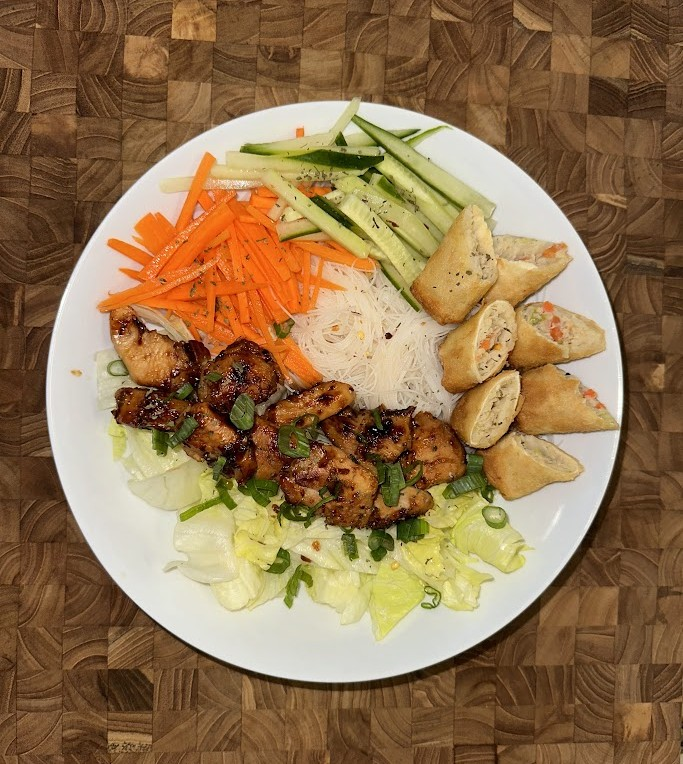

Bun Ga Nuong (Vietnamese Chicken & Vermicelli Noodle Bowl)

Ingredients
Chicken Breasts or Thighs
Vermicelli Noodles
Cucumber
Carrot
Iceberg Lettuce
Bean Sprouts
Fresh Cilantro
Marinade
Fish Sauce
Soy Sauce
Sugar
Vegetable Oil
Lemongrass
Garlic
Pepper
Sauce
Fish Sauce
Sugar
Lime Juice
Warm Water
Instructions
Finely mince 2 lemongrass stalks and 3 garlic cloves Add to a bowl with 1 tbsp of each; Fish Sauce, Soy Sauce, Sugar, Vegetable Oil Season with white or black pepper and add in chicken Cover and marinade chicken for at least 1 hour Fill up a bowl with hot tap water and soak vermicelli noodles for about 15 minutes Sear the chicken over medium high heat for about 6 minutes on each side Julienne Carrot and Cucumber & Shred Lettuce Add carrot and cucumber to pan for the final couple minutes To prepare the sauce, dissolve 3 tbsps of sugar in 1/2 cup of warm water Stir in 3 tbsps each of fish sauce and lime juice Layer cooked noodles, shredded lettuce, vegetables, sliced chicken and cilantro Drizzle with sauce and serve (Optional additions: Spring Rolls, Crushed Peanuts, Fried Shallots, Chili Oil)